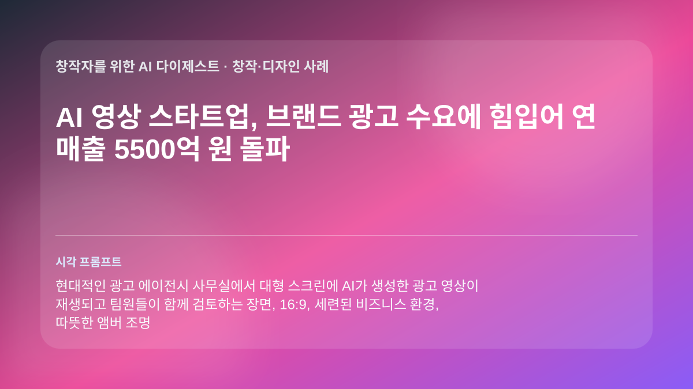

AI 영상 스타트업, 브랜드 광고 수요에 힘입어 연 매출 5500억 원 돌파

한 AI 영상 스타트업이 기업 광고 제작 수요 급증으로 연간 반복 매출(ARR)이 5억 달러(약 5500억 원)까지 치솟았다고 밝혔어요. 브랜드들이 AI로 광고 영상을 더 빠르고 저렴하게 만들기 위해 경쟁적으로 AI 영상 도구를 도입하고 있다는 강력한 신호예요. AI 영상이 실험 단계를 완전히 넘어 기업 광고의 실제 제작 도구로 자리 잡은 것을 보여줍니다.
인사이트: AI 영상이 광고·마케팅 시장에서 이미 주류가 됐다는 뜻이에요. 영상 창작자라면 AI 도구 활용 역량을 지금 쌓아야 차별화된 경쟁력을 갖출 수 있어요.